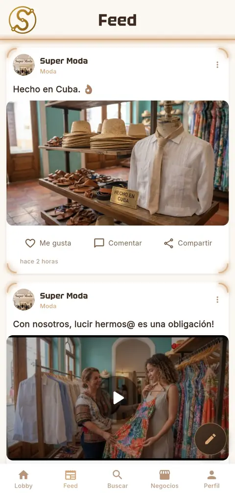
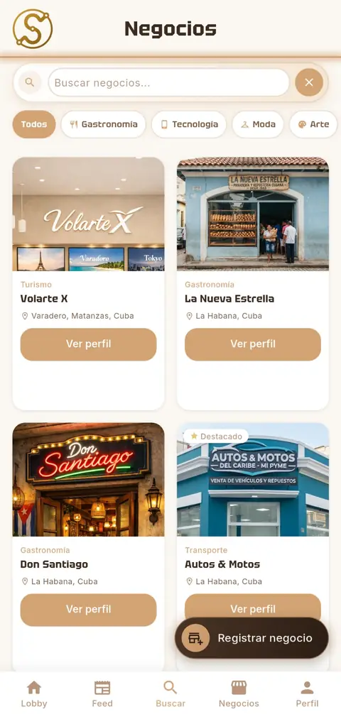
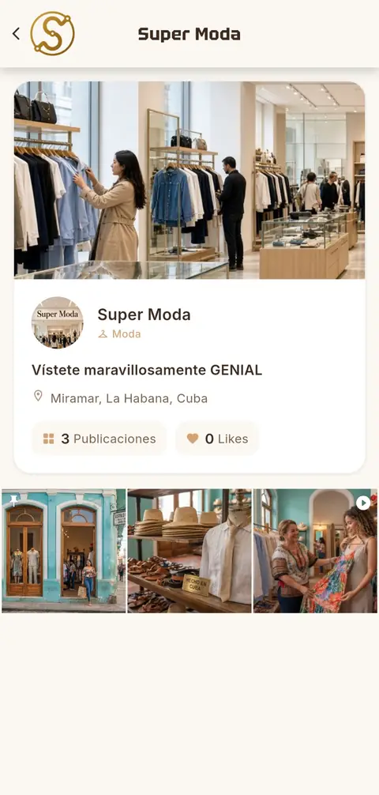
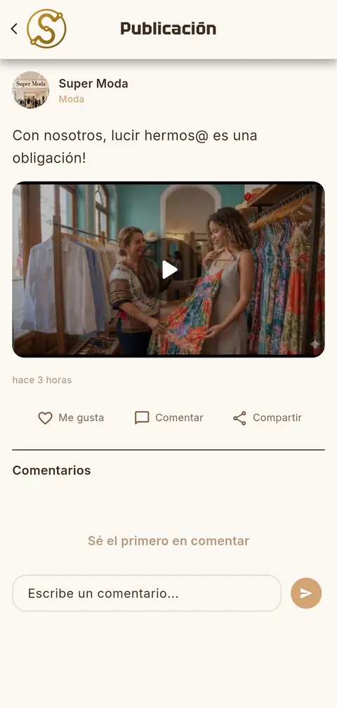
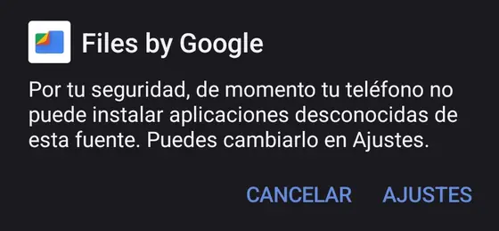
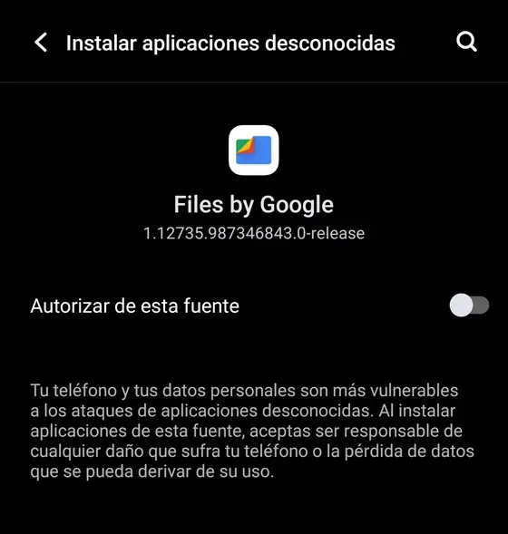
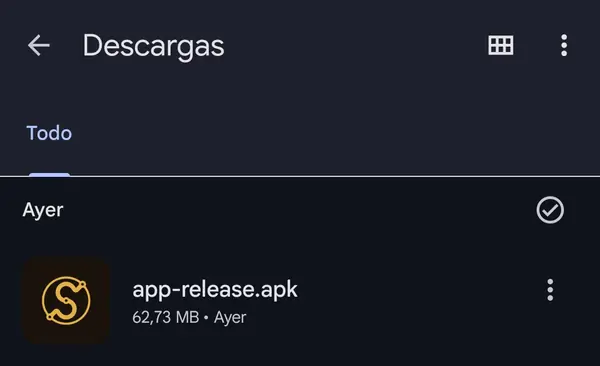
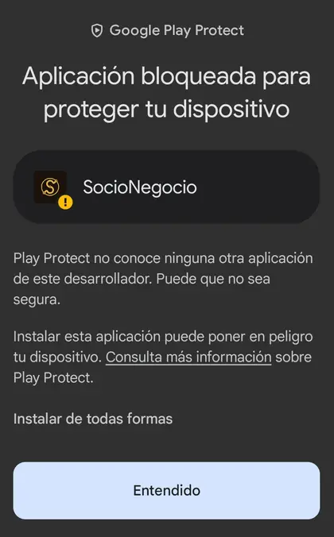
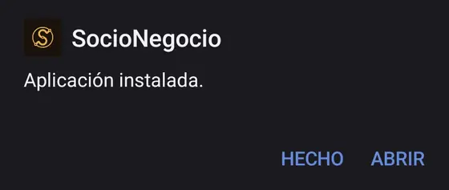

Tu negocio, a la vista de todos.
El directorio y la red de emprendedores cubanos. Funciona incluso cuando la conexión falla.
Descargar para AndroidGratis · Instalación en 3 pasos
Para teléfonos Android 7.0 o superior

Por qué SocioNegocio
-
Funciona aunque la conexión falle
Si se te va la conexión, sigues viendo los negocios y publicaciones que ya cargaste. Al volver a conectarte, se actualizan.
-
Tu negocio, visible en un solo lugar
Un directorio para encontrar negocios por nombre o categoría, y un feed con sus novedades: fotos, videos, y la opción de dar me gusta, comentar y compartir.
-
Hecha en Cuba, para lo nuestro
Hecha en Cuba para apoyar la economía local: que la gente encuentre lo que emprenden sus vecinos, y que cada emprendedor se dé a conocer.
Así se ve por dentro
Capturas reales de la app, con datos de ejemplo.



Cómo instalar SocioNegocio en 3 pasos
Los nombres de los botones pueden variar un poco según la marca de tu teléfono y su versión de Android.
SocioNegocio no se descarga de una tienda de aplicaciones, y Android muestra un aviso con cualquier app que viene de fuera. Si la descargaste desde esta página, puedes continuar.
-
Descarga el archivo
Toca el botón dorado. Tu navegador puede avisarte de que «este tipo de archivo puede dañar tu dispositivo»: es un aviso general para cualquier aplicación que no viene de una tienda.
Descargar para Android -
Permite la instalación desde esta fuente
Si Android te avisa de que «de momento tu teléfono no puede instalar aplicaciones desconocidas de esta fuente», toca «Ajustes» y activa «Autorizar de esta fuente» (en otros teléfonos dice «Permitir desde esta fuente»). Después vuelve atrás.

El aviso: toca «Ajustes» 
Activa «Autorizar de esta fuente» En estas capturas la fuente es «Files by Google»; en tu teléfono puede aparecer tu navegador u otro administrador de archivos.
-
Abre el archivo e instala
Ábrelo desde la notificación de descarga o desde la carpeta Descargas (se llama SocioNegocio.apk) y toca Instalar.
Si aparece «Aplicación bloqueada para proteger tu dispositivo», pulsa «Instalar de todas formas» (el texto pequeño; no el botón «Entendido»). En otros teléfonos dice «Más detalles» y luego «Instalar de todos modos».

El archivo en Descargas 
El aviso de Play Protect: elige «Instalar de todas formas» 
Cuando diga «Aplicación instalada», toca «Abrir» Al abrirla, puedes explorar negocios como invitado o crear tu cuenta.
El aviso de Google Play Protect: qué significa y qué hacer
Qué verás. Una pantalla que dice «Aplicación bloqueada para proteger tu dispositivo» y «Play Protect no conoce ninguna otra aplicación de este desarrollador».
Por qué sale. Play Protect es el revisor de Google para las apps de su tienda. SocioNegocio no se descarga de esa tienda sino de esta página, y Google todavía no conoce a su desarrollador, así que avisa. El aviso no dice que haya un problema en la app: dice que Google no conoce al desarrollador.
Qué hacer. Toca «Instalar de todas formas», el texto pequeño que está encima del botón. El botón grande, «Entendido», solo cierra el aviso y no instala nada.
Para ir con tranquilidad. Descarga el archivo solo desde esta página y, si quieres, comprueba su huella, más abajo en esta sección.
Comprobar que el archivo es el original (opcional)
Versión
Huella SHA-256 del archivo (para comprobar que es el original):
Descárgala solo desde aquí
- Esta es la única página oficial de descarga de SocioNegocio.
- Nadie del equipo te pedirá tu contraseña ni códigos por mensaje.
- Si alguien te pasa el archivo por Bluetooth o por una aplicación para compartir archivos, asegúrate de que sea de alguien de confianza y de que sea la última versión. Ante la duda, descárgalo desde esta página.
- Quien quiera comprobar que el archivo es el original puede comparar su huella SHA-256 con la que aparece arriba.
¿Tienes un negocio? Súmalo a SocioNegocio
Registrarlo es gratis y se hace desde la app.
- Instala la app y crea tu cuenta. Te enviamos un enlace para verificar tu correo.
- Pulsa «Registrar negocio» y completa los datos: nombre, categoría, ubicación, contacto y foto.
- Publica fotos, videos y novedades para que te encuentren.
Tu primer negocio es gratis, y también las 6 primeras publicaciones de cada negocio.
Desde la séptima publicación, y en opciones como negocios adicionales, videos más largos o destacar tu negocio, hay un costo. La app te lo muestra antes de que confirmes nada.
Preguntas frecuentes
¿Es gratis?
Sí. Descargar y usar SocioNegocio no cuesta nada. Registrar tu primer negocio y publicar las 6 primeras publicaciones de cada negocio también es gratis. Algunas opciones para negocios tienen costo (más publicaciones, videos más largos, negocios adicionales y destacar tu negocio), y la app te lo muestra antes de que confirmes.
¿Necesito internet para usarla?
Para ver los negocios y publicaciones que ya cargaste, no siempre. Para crear tu cuenta, publicar, comentar o subir fotos y videos, sí necesitas conexión.
¿Qué permisos pide?
Estos son todos los permisos que aparecen en el archivo de instalación de la app:
- Internet y estado de la red: para conectarse y saber si hay conexión.
- Mantener el teléfono despierto: mientras la app termina una tarea.
- Almacenamiento (leer y escribir): es un permiso antiguo que traen componentes que usa la app para preparar los videos y fotos que publicas. La app no te lo pide en pantalla: tú eliges las fotos y videos con el selector de tu teléfono.
No pide acceso a tu cámara, micrófono, ubicación, contactos ni mensajes.
¿Qué datos guarda la app?
Lo explicamos con detalle en la Política de privacidad. Si quieres que borremos tu cuenta y tus datos, puedes pedirlo desde la app (Mi Perfil → Eliminar mi cuenta) o desde esta página.
¿Quién la creó?
SocioNegocio la desarrolla SydeEliteX, en Cuba. Puedes escribirnos a socionegocio27@gmail.com.
¿Qué hago si no se instala?
- Comprueba que tu teléfono tenga Android 7.0 o superior (Ajustes → Acerca del teléfono).
- Libera espacio: el archivo pesa unos 60 MB y la instalación necesita más. Conviene tener unos 300 MB libres.
- Vuelve a descargarlo desde esta página. Si pesa mucho menos de lo indicado arriba, la descarga se cortó; y evita archivos que te hayan pasado por mensaje.
- Si Android te lo pide, autoriza la instalación desde esta fuente (paso 2).
- Si sale el aviso de Play Protect, elige «Instalar de todas formas» (paso 3).
Si sigue sin funcionar, escríbenos a socionegocio27@gmail.com y cuéntanos qué teléfono tienes y qué ocurrió.
¿Cómo actualizo?
Cuando haya una versión nueva, descárgala desde esta página y ábrela igual que la primera vez. Se instala sobre la anterior, sin perder tu cuenta ni tus datos.
¿Por qué Android me muestra un aviso?
Porque SocioNegocio no viene de una tienda de aplicaciones: Android avisa con cualquier app que se instala desde un archivo, y Google Play Protect puede añadir su propio aviso (lo explicamos en «Cómo instalar»). Es normal; lo importante es descargarla solo desde esta página.
Empieza hoy
SocioNegocio es gratis y se instala en 3 pasos.
Descargar para AndroidPara teléfonos Android 7.0 o superior